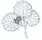
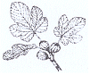
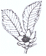
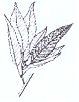
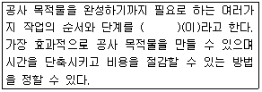

조경기능사 (2014-01-26 기출문제)
1과목: 조경일반
1. 토양의 단면 중 낙엽이 대부분 분해되지 않고 원형 그대로 쌓여 있는 층은?
- L층
- F층
- H층
- C층
(정답률: 85%)

2. 다음 중 색의 대비에 관한 설명이 틀린 것은?
- 보색인 색을 인접시키면 본래의 색보다 채도가 낮아져 탁해 보인다.
- 명도단계를 연속시켜 나열하면 각각 인접한 색끼리 두드러져 보인다.
- 명도가 다른 두 색을 인접시키면 명도가 낮은 색은 더욱 어두워 보인다.
- 채도가 다른 두 색을 인접시키면 채도가 높은 색은 더욱 선명해 보인다.
(정답률: 62%)
3. 조경 프로젝트의 수행단계 중 주로 공학적인 지식을 바탕으로 다른 분야와는 달리 생물을 다룬다는 특수한 기술이 필요한 단계로 가장 적합한 것은?
- 조경계획
- 조경설계
- 조경관리
- 조경시공
(정답률: 80%)
4. 다음 중 일반적으로 옥상정원 설계시 일반조경 설계보다 중요하게 고려할 항목으로 관련으로 가장 적은 것은?
- 토양층 깊이
- 방수 문제
- 지주목의 종류
- 하중 문제
(정답률: 86%)
5. 로마의 조경에 대한 설명으로 알맞은 것은?
- 집의 첫번째 중정(Atrium)은 5점형 식재를 하였다.
- 주택정원은 그리스와 달리 외향적인 구성이었다.
- 집의 두번째 중정(Peristylium)은 가족을 위한 사적 공간이다.
- 겨울 기후가 온화하고 여름이 해안기후로 시원하여 노단형의 별장(Villa)이 발달하였다.
(정답률: 79%)
6. 앙드레 르노트르(Andre Le notre)가 유명하게 된 것은 어떤 정원을 만든 후 부터인가?
- 베르사이유(Versailles)
- 센트럴 파크(Central Park)
- 토스카나장(Villa Toscana)
- 알함브라(Alhambra)
(정답률: 83%)
7. 경관 구성의 기법 중 한 그루의 나무를 다른 나무와 연결시키지 않고 독립하여 심는 경우를 말하며, 멀리서도 눈에 잘 띄기 때문에 랜드 마크의 역할도 하는 수목 배치 기법은?
- 점식
- 열식
- 군식
- 부등변 삼각형 식재
(정답률: 87%)
8. 계획 구역 내에 거주하고 있는 사람과 이용자를 이해하는데 목적이 있는 분석 방법은?
- 자연환경 분석
- 인문환경 분석
- 시각환경 분석
- 청각환경 분석
(정답률: 89%)
9. 다음 중 일본정원과 관련이 가장 적은 것은?
- 축소 지향적
- 인공적 기교
- 통견선의 강조
- 추상적 구성
(정답률: 84%)
10. 도시공원 및 녹지 등에 관한 법률에서 어린이공원의 설계기준으로 틀린 것은?
- 유지거리는 250m 이하, 1개소의 면적은 1500㎡ 이상의 규모로 한다.
- 휴양시설 중 경로당을 설치하여 어린이와의 유대감을 형성할 수 있다.
- 유희시설에 설치되는 시설물에는 정글짐, 미끄럼틀, 시소 등이 있다.
- 공원시설 부지면적은 전체 면적의 60% 이하로 하여야 한다.
(정답률: 87%)
11. 수목을 표시를 할 때 주로 사용되는 제도 용구는?
- 삼각자
- 템플릿
- 삼각축척
- 곡선자
(정답률: 90%)
12. 귤준망의 [작정기]에 수록된 내용이 아닌 것은?
- 서원조 정원 건축과의 관계
- 원지를 만드는 법
- 지형의 취급방법
- 입석의 의장법
(정답률: 68%)
13. 식재설계에서의 인출선과 선의 종류가 동일한 것은?
- 단면선
- 숨은선
- 경계선
- 치수선
(정답률: 79%)
14. 다음 중 이탈리아 정원의 장식과 관련된 설명으로 가장 거리가 먼 것은?
- 기둥 복도, 열주, 퍼골라, 조각상, 장식분이 된다.
- 계단 폭포, 물무대, 정원극장, 동굴 등이 장식된다.
- 바닥은 포장되며 곳곳에 광장이 마련되어 화단으로 장식된다.
- 원예적으로 개량된 관목성의 꽃나무나 알뿌리 식물 등이 다량으로 식재되어진다.
(정답률: 70%)
15. 시공 후 전체적인 모습을 알아보기 쉽도록 그린 그림과 같은 형태의 도면은?
- 평면도
- 입면도
- 조감도
- 상세도
(정답률: 86%)
2과목: 조경재료
16. 주철강의 특성 중 틀린 것은?
- 선철이 주재료이다.
- 내식성이 뛰어나다.
- 탄소 함유량은 1.7~6.6%이다.
- 단단하여 복잡한 형태의 주조가 어렵다.
(정답률: 72%)
17. 섬유포화점은 목재 중에 있는 수분이 어떤 상태로 존재하고 있는 것을 말하는가?
- 결합수만이 포함되어 있을 때
- 자유수만이 포함되어 있을 때
- 유리수만이 포함되어 있을 때
- 자유수와 결합수가 포함되어 있을 때
(정답률: 52%)
18. 다음 중 옥상정원을 만들 때 배합하는 경량재로 사용하기 가장 어려운 것은?
- 사질 양토
- 버미큘라이트
- 펄라이트
- 피트
(정답률: 82%)
19. 골재의 함수상태에 대한 설명 중 옳지 않은 것은?
- 절대건조상태는 1⑤±5℃ 정도의 온도에서 24시간 이상 골재를 건조시켜 표면 및 골재알 내부의 빈틈에 포함되어 있는 물이 제거된 상태이다.
- 공기 중 건조 상태는 실내에 방치한 경우 골재입자의 표면과 내부의 일부가 건조된 상태이다.
- 표면건조포화 상태는 골재입자의 표면에 물은 없으나, 내부에는 물이 꽉 차 있는 상태이다.
- 습윤 상태는 골재 입자의 표면에 물이 부착되어 있으나 골재 입자 내부에는 물이 없는 상태이다.
(정답률: 60%)
20. 다음 중 자작나무과(科)의 물오리나무 잎으로 가장 적합한 것은?




(정답률: 78%)
21. 실리카질 물질(SiO2)을 주성분으로 하여 그 자체는 수경성(hydraulicity)이 없으나 시멘트의 수화에 의해 생기는 수산화칼슘[Ca(OH)2]과 상온에서 서서히 반응하여 불용성의 화합물을 만드는 광무질 미분말의 재료는?
- 실리카흄
- 고로슬래그
- 플라이애시
- 포졸란
(정답률: 46%)
22. 다음 중 물푸레나무과 해당되지 않는 것은?
- 미선나무
- 광나무
- 이팝나무
- 식나무
(정답률: 49%)
23. 석재의 가공방법 중 혹두기 작업의 바로 다음 후속작업으로 작업면을 비교적 고르고 곱게 처리할 수 있는 작업은?
- 물갈기
- 잔다듬
- 정다듬
- 도드락다듬
(정답률: 78%)
24. 조경 수목 중 아황산가스에 대해 강한 수종은?
- 양버즘나무
- 삼나무
- 전나무
- 단풍나무
(정답률: 74%)
25. 수목은 생육조건에 따라 양수와 음수로 구분하는데, 다음 중 성격이 다른 하나는?
- 무궁화
- 박태기나무
- 독일가문비나무
- 산수유
(정답률: 68%)
26. 다음 중 고광나무(Philadelphus schrenkii)의 꽃 색깔은?
- 적색
- 황색
- 백색
- 자주색
(정답률: 59%)
27. 화성암의 심성암에 속하며 흰색 또는 담회색인 석재는?
- 화강암
- 안산암
- 점판암
- 대리석
(정답률: 69%)
28. 대취란 지표면과 잔디(녹색식물체) 사이에 형성되는 것으로 이미 죽었거나 살아있는 뿌리, 줄기 그리고 가지 등이 서로 섞여 있는 유층을 말한다. 다음 중 대취의 특징으로 옳지 않은 것은?
- 한겨울에 스캘팡이 생기게 한다.
- 대취층에 병원균이나 해충이 기거하면서 피해를 준다.
- 탄력성이 있어서 그 위에서 운동할 때 안전성을 제공한다.
- 소수성인 대취의 성질로 인하여 토양으로 수분이 전달되지 않아서 국부적으로 마른 지역을 형성하며 그 위에 잔디가 말라 죽게 한다.
(정답률: 52%)
29. 다음 중 가을에 꽃향기를 풍기는 수종은?
- 매화나무
- 수수꽃다리
- 모과나무
- 목서류
(정답률: 74%)
30. 다음 중 정원 수목으로 적합하지 않은 것은?
- 잎이 아름다운 것
- 값이 비싸고 희귀한 것
- 이식과 재배가 쉬운 것
- 꽃과 열매가 아름다운 것
(정답률: 92%)
31. 다음 중 난지형 잔디에 해당되는 것은?
- 레드톱
- 버뮤다그라스
- 켄터키 블루그라스
- 톨 훼스큐
(정답률: 87%)
32. 겨울 화단에 식재하여 활용하기 가장 적합한 식물은?
- 팬지
- 메리골드
- 달리아
- 꽃양배추
(정답률: 90%)
33. 다음 노박덩굴(Celastraneae)과 식물 중 상록계열에 해당하는 것은?
- 노박덩굴
- 화살나무
- 참빗살나무
- 사철나무
(정답률: 75%)
34. 다음 도료 중 건조가 가장 빠른 것은?
- 오일페인트
- 바니쉬
- 래커
- 레이크
(정답률: 86%)
35. 지력이 낮은 척박지에서 지력을 높이기 위한 수단으로 식재 가능한 콩과(科) 수종은?
- 소나무
- 녹나무
- 갈참나무
- 자귀나무
(정답률: 75%)
3과목: 조경 시공 및 관리
36. 지형을 표시하는데 가장 기본이 되는 등고선의 종류는?
- 조곡선
- 주곡선
- 간곡선
- 계곡선
(정답률: 86%)
37. 다음 중 소나무의 순자르기 방법으로 가장 거리가 먼 것은?
- 수세가 좋거나 어린나무는 다소 빨리 실시하고, 노목이나 약해 보이는 나무는 5~7일 늦게 한다.
- 손으로 순을 따 주는 것이 좋다.
- 5~6월경에 새순이 5~10㎝ 자랐을 때 실시한다.
- 자라는 힘이 지나치다고 생각될 때에는 1/3~1/2정도 남겨두고 끝 부분을 따 버린다.
(정답률: 77%)
38. 시멘트의 응결을 빠르게 하기 위하여 사용하는 혼화제는?
- 지연제
- 발표제
- 급결제
- 기포제
(정답률: 87%)
39. 난지형 한국잔디의 발아적온으로 맞는 것은?
- 15~20℃
- 20~23℃
- 25~30℃
- 30~33℃
(정답률: 54%)
40. 용적 배합비 1:2:4 콘크리트 1m3 제작에 모래가 0.45m3 필요하다. 자갈은 몇 m3 필요한가?
- 0.45m3
- 0.5m3
- 0.90m3
- 0.15m3
(정답률: 84%)
41. 축적이 1/5000인 지도상에서 구한 수평 면적이 5cm2라면 지상에서의 실제면적은 얼마인가?
- 1250m2
- 12500m2
- 2500m2
- 25000m2
(정답률: 50%)
42. 다음 중 잡초의 특성으로 옳지 않은 것은?
- 재생 능력이 강하고 번식 능력이 크다.
- 종자의 휴면성이 강하고 수명이 길다.
- 생육 환경에 대하여 적응성이 작다.
- 땅을 가리지 않고 흡비력이 강하다.
(정답률: 86%)
43. 겨울철에 제설을 위하여 사용되는 해빙염(deicing salt)에 관한 설명으로 옳지 않은 것은?
- 염화칼슘이나 염화나트륨이 주로 사용된다.
- 장기적으로는 수목의 쇠락(decline)으로 이어진다.
- 흔히 수목의 잎에는 괴사성 반점(점무늬)이 나타난다.
- 일반적으로 상록수가 낙엽수보다 더 큰 피해를 입는다.
(정답률: 52%)
44. 소나무류의 잎솎기는 어느 때 하는 것이 가장 좋은가?
- 12월경
- 2월경
- 5월경
- 8월경
(정답률: 66%)
45. 다음 중 천적 등 방제대상이 아닌 곤충류에 가장 피해를 주기 쉬운 농약은?
- 훈증제
- 전착제
- 침투성 살충제
- 지속성 접촉제
(정답률: 60%)
46. 토양수분 중 식물이 이용하는 형태로 가장 알맞은 것은?
- 결합수
- 자유수
- 중력수
- 모세관수
(정답률: 83%)
47. 다음 ( )에 알맞은 것은?

- 공종
- 검토
- 시공
- 공정
(정답률: 82%)
48. 다음 선의 종류와 선긋기의 내용이 잘못 짝지어진 것은?(오류 신고가 접수된 문제입니다. 반드시 정답과 해설을 확인하시기 바랍니다.)
- 파선 : 단면
- 가는 실선 : 수목인 출선
- 1점 쇄선 : 경계선
- 2점 쇄선 : 중심선
(정답률: 67%)
49. 전정도구 중 주로 연하고 부드러운 가지나 수관 내부의 가늘고 약한 가지를 자를 때와 꽃꽃이를 할 때 흔히 사용하는 것은?
- 대형전정가위
- 적심가위 또는 순치기가위
- 적화, 적과가위
- 조형 전정가위
(정답률: 77%)
50. 콘크리트용 골재로서 요구되는 성질로 틀린 것은?
- 단단하고 치밀할 것
- 필요한 무게를 가질 것
- 알의 모양은 둥글거나 입방체에 가까울 것
- 골재의 낱알 크기가 균등하게 분포할 것
(정답률: 62%)
51. 임목(林木) 생장에 가장 좋은 토양구조는?
- 판상구조(platy)
- 괴상구조(blocky)
- 입상구조(granular)
- 견파상구조(nutty)
(정답률: 73%)
52. 다음 중 방위각 150˚를 방위로 표시하면 어느 것인가?
- N 30˚E
- S 30˚E
- S 30˚W
- N 30˚W
(정답률: 62%)
53. 이식한 수목의 줄기와 가지에 새끼로 수피감기하는 이유로 가장 거리가 먼 것은?
- 경관을 향상시킨다.
- 수피로부터 수분 증산을 억제한다.
- 병해충의 침입을 막아준다.
- 강한 태양광선으로부터 피해를 막아준다.
(정답률: 84%)
54. 다음 중 비탈면을 보호하는 방법으로 짧은 시간과 급경사 지역에 사용하는 시공방법은?
- 자연석 쌓기법
- 콘크리트 격자틀공법
- 떼심기법
- 종자뿜어 붙이기법
(정답률: 74%)
55. 농약을 유효 주성분의 조성에 따라 분류한 것은?
- 입제
- 훈증제
- 유기인계
- 식물생장 조정제
(정답률: 56%)
56. 소나무류 가해 해충이 아닌 것은?
- 알락하늘소
- 솔잎혹파리
- 솔수염하늘소
- 솔나방
(정답률: 76%)
57. 고속도로의 시선유도 식재는 주로 어떤 목적을 갖고 있는가?
- 위치를 알려준다.
- 침식을 방지한다.
- 속력을 줄이게 한다.
- 전방의 도로 형태를 알려준다.
(정답률: 84%)
58. 다음 중 여성토의 정의로 가장 알맞은 것은?
- 가라앉을 것을 예측하여 흙을 계획높이보다 더 쌓는 것
- 중앙분리대에서 흙을 볼록하게 쌓아 올리는 것
- 옹벽 앞에 계단처럼 콘크리트를 쳐서 옹벽을 보강하는 것
- 잔디밭에서 잔디에 주기적으로 뿌려 뿌리가 노출되지 않도록 준비하는 토양
(정답률: 82%)
59. 다음 중 등고선의 성질에 관한 설명으로 옳지 않은 것은?
- 등고선 상에 있는 모든 점은 높이가 다르다.
- 등경사지는 등고선 간격이 같다.
- 급경사지는 등고선 간격이 좁고, 완경사지는 등고선 간격이 넓다.
- 등고선은 도면의 안이나 밖에서 폐합되며 도중에 없어지지 않는다.
(정답률: 69%)
60. 토양침식에 대한 설명으로 옳지 않은 것은?
- 토양의 침식량은 유거수량이 많을수록 적어진다.
- 토양유실량은 강우량보다 최대강우강도와 관계가 있다.
- 경사도가 크면 유속이 빨라져 무거운 입자도 침식된다.
- 식물의 생장은 투수성을 좋게 하여 토양 유실량을 감소시킨다.
(정답률: 68%)